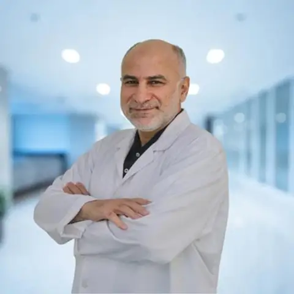
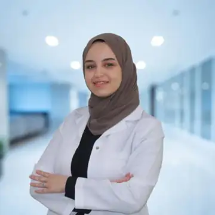

Dr. Munir Silwadi Dental Centre
Advanced dentistry.
Established trust.
Dental care in Abu Dhabi since 1980, with general dentists and specialists working together in one established centre.
Abu DhabiSince 1980
Specialist ProsthodontistDr. Munir SilwadiSpecialist Prosthodontist & Implantologist
1980Established




Treatments
Dental services at Silwadi.
Choose a treatment area, or contact us if you are not sure where to start.
01→02→03→04→05→
Implantology
Dental implant assessment, planning and implant-supported restorative care.
Orthodontics
Specialist care for braces, aligners, tooth alignment and bite correction.
Cosmetic Dentistry
Aesthetic dental care including whitening, veneers and restorative smile planning after assessment.
Preventive Treatments
Routine examinations, preventive planning and care that supports ongoing oral health.
Periodontics
Specialist care for the gums and supporting tissues around the teeth.
Our story
Serving Abu Dhabi since 1980.
For more than four decades, Silwadi Dental Center has focused on patient-centred care, personalized treatment, comfort, patient education and open communication.
Learn more about the centre →Since 1980Abu Dhabi
Two locationsBani Yas Tower + Al Raha Mall
Our doctors
Specialist expertise. Personal care.
Meet some of our dentists and specialists, or browse the full team by specialty.
Google reviews
What patients say about Silwadi.
Recent public review highlights for the Bani Yas Tower location. Read the full reviews on Google Maps.
Locations
Dental care in Abu Dhabi.
Silwadi welcomes patients at Bani Yas Tower and Al Raha Mall.
Bani Yas Tower
Bani Yas Tower, Building 117 C Floor, Sultan Bin Zayed The First St, W Corniche Road, Abu Dhabi.
Al Raha Mall
F14 & F15, Level 1, Al Raha Mall, Abu Dhabi, UAE.
Consultations
Not sure which dentist you need?
Tell our team what you need help with and we can guide you toward the appropriate clinician.